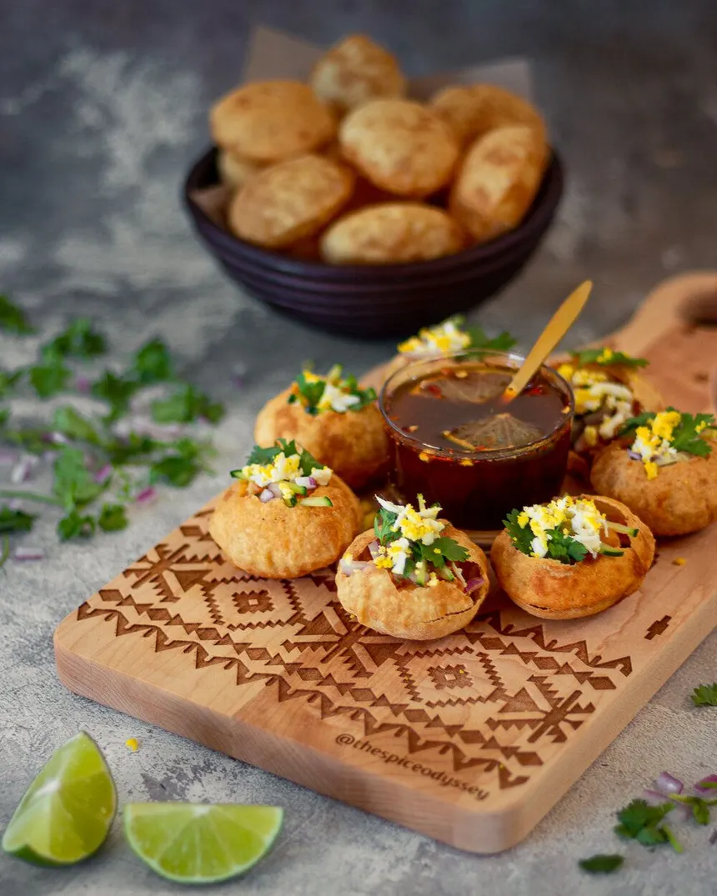

Home
Fuchka

Description
ফুচকা হলো বাংলাদেশের জনপ্রিয় street food।
খাস্তা পুরির ভিতরে আলু-মটর মিশ্রণ, তেঁতুলের টক পানি এবং বিভিন্ন মসলা দিয়ে এটি তৈরি করা হয়।
Ingredients
- ফুচকার খালি পুরি - ২০-২৫টা
- সেদ্ধ আলু - ২টা (ম্যাশ করা)
- সেদ্ধ ছোলা বা সাদা মটর - ১ কাপ
- কুচানো পেঁয়াজ - ২ টেবিল চামচ
- কাঁচা মরিচ কুচি - ১ চা চামচ
- ধনেপাতা কুচি - ২ টেবিল চামচ
- তেঁতুলের পানি - ১ কাপ
- ভাজা জিরা গুঁড়া - ১ চা চামচ
- চাট মসলা - ১ চা চামচ
- লবণ - স্বাদমতো
Recipe (Steps)
- একটি বাটিতে আলু, ছোলা, পেঁয়াজ, মরিচ, ধনেপাতা, লবণ ও মসলা মিশাও।
- তেঁতুল ভিজিয়ে টক পানি তৈরি করো এবং তাতে লবণ ও চাট মসলা মিশাও।
- ফুচকার উপরে ছোট ছিদ্র করে আলুর মিশ্রণ ভরো।
- তেঁতুল পানি ঢেলে সাথে সাথে পরিবেশন করো।